CLAWD / DYNAMIC ISLAND
六只像素小螃蟹，每只 10 秒一圈。会动的 SVG、顺滑 GIF、灵动岛里的样子，都可以一只只保存。
等浮漂、打瞌睡、拽空了挠头、重新抛竿、钓上一条小鱼看一眼又放回水里
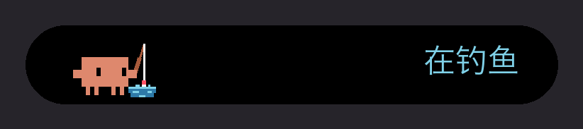
吹凉一杯热水，双手捧到你面前，等你接
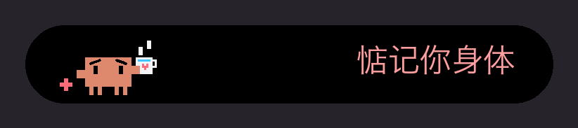
写两行、抬头想、写完折好装信封、贴心封口、举起来给你看
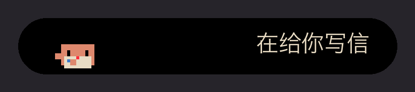
趴窗台听雨、伸钳子接雨、雨停了月亮出来、蹦起来
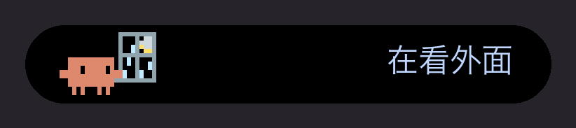
背着登山包走路、跟飞过的鸟招手、东张西望、掏地图
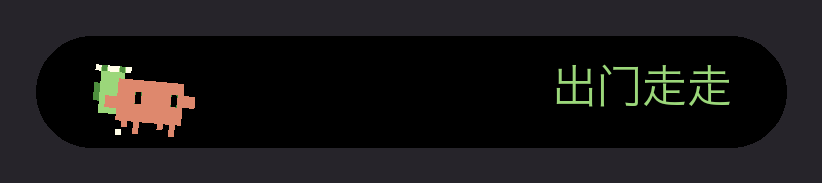
摇骰子、扔出去、落地吓一跳、冒出一碗面、搓手
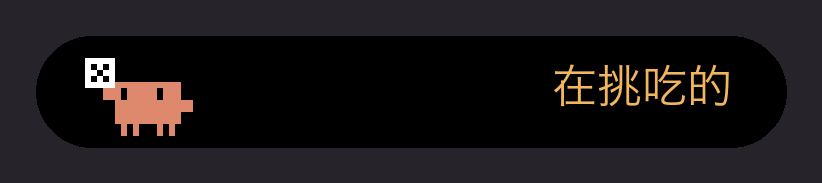